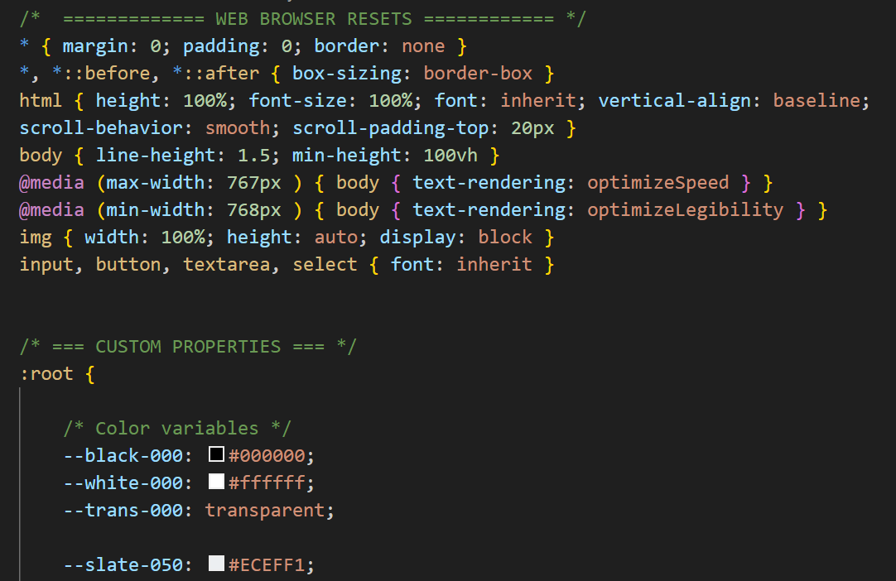

Learning Goals
At the end of this Tutorial, you will be able to:
- Create and use classes in HTML and CSS.
- Create and use custom properties in HTML and CSS.
About classes and class names
In the sample file page-3.html, you created a web page with a <main> container block and inside that six <section> containers.
You will now assign different text and background colours to the content inside these various <section> elements.

To assign different colours (or other styles) to the content with the same tag (such as <section>), you can use what are called classes of that tag.
You can think of classes as a version of an HTML tag.
In an HTML file, you assign a class to a <section> or other tag by giving it a class name. Below you can see some examples of class names assigned to opening <section> tags.

Here are the rules about class names:
- Class names are entered within a pair of double quotes ("").

- Class names cannot have a space within them. You can type the hyphen (-) character to join words.

- An element can have more than one class name assigned to it. Separate the different class names with a single space.

- If an element has more than one class name, the order of the names is not important.

In a linked CSS stylesheet, you style rules to an HTML element in the same way as you would with any other CSS selector – but you must begin the selector name with a full stop (.). See the examples below.

Adding colours to your page-3.html web page
Follow the steps below,
- In VS Code, open your page-3.html web age.
- Add the following class names to the six <section> containers, and save the file.
 Note that you apply the same class name to multiple elements in a web page. In this example, both the first and last <section> have the same class name.
Note that you apply the same class name to multiple elements in a web page. In this example, both the first and last <section> have the same class name. - Open your style-3.css stylesheet, create the following CSS class selectors, and apply a different background-color value to each one, and save the file. See the example below.

- If you have applied a dark background colour to any <section>, update the relevant text colours to white to make the text readable. See the example below.

Your final web page should look similar to that below.

Working with colour models
Up to now you have used colour names such as 'red' or 'blue' to set the colours of HTML elements. However, colour names have two disadvantages:
- Limited choice: Modern electronic screens can display at least 16 million different colours. With colour names, you are limited to only 147 choices.
- Misleading names: Even when colour names are easy-to-remember, they are not always accurate. For example, DarkGray is actually lighter than Gray.

Note that, in CSS, the colour name of grey can be written in either US spelling (gray) or UK spelling (grey). Either will work correctly.
Frontend developers use two common colour models or systems for setting colours in web pages:
- RGB system: Colours are created by combining different intensities of the three primary colours: red, green and blue. The three values can range from 0 to 255. See the examples below:
h1 { color: rgb(0,0,255) /* blue */ } h2 { color: rgb(255,248,220) /* light brown */ } h3 { color: rgb(255,0,255) /* magenta */ }
- Hex system: The most widely used colour model, but also the least intuitive. Note each hex (short for hexadecimal) colour code begins with the hash # symbol. Here are some examples:
h1 { color: #0000FF /* blue */ } h2 { color: #FFF5DC /* light brown */ } h3 { color: #FF00FF /* magenta */ }
Both the RGB and Hex systems can be used to set the colour of text, backgrounds, borders, and other elements in a web page.
Colours and custom properties
The modern method of adding colours to web pages is a two-step process as follows:
- Add a list or palette of colours with easy-to-use and easy-to-understand names to the CSS stylesheet as custom properties.
Some typical examples are shown below.
--red-050: #FEF2F2; --red-100: #fff5f5; --red-200: #fed7d7; --red-300: #feb2b2; --red-400: #fc8181; --red-500: #f56565; --red-600: #e53e3e; --red-700: #c53030; --red-800: #9b2c2c; --red-900: #742a2a;
As you can see, every custom property name begins with two dashes -- - Apply colours from the palette to elements in the web page as required.
To use a custom property, enter the var keyword, followed by a parenthesis () containing the name of the custom property. See the examples below.
section { background-color: var(--yellow-500); } h2 { background-color: var(--blue-700); }
Modern front-end frameworks typically include a CSS file containing a palette of ready-to-use colours defined as custom variables. You can see four examples of such frameworks and their palettes of CSS custom colour variables below.


Adding custom colours to style-3.css
In this next exercise you will add custom colours to your style-3.css file, and then use these to update the appearance of your page-3.html web page.
- In VS Code, open your style-3.css stylesheet file from your websites/assets/css folder.
- In your web browser, click the following file to open it in a new tab, and select and copy all the text in the file: custom-colors.txt
- In your style-3.css stylesheet, click just after the opening curly brace { of the CSS custom properties and press the Enter key a few times to open some new, blank lines.

- Paste in the contents of the custom-colors.txt file, and save style-3.css. The top part of your stylesheet should now look as shown below.  All these custom colour properties are now available to the linked web page page-3.html
- Update the colours for the class selectors, using these custom properties. See the examples below.

✅ You are now finished working with your page-3.html web page and style-3.css stylesheet.
Uploading your work to Github
You are now ready to upload your work to your account on Github.
- Open a new tab in your web browser and go to Github.com. If you are not already signed in to your Github account, sign in now.

- On your Github home page, click the name of the repository (‘repo’) that holds your web pages. Its name will look as follows, where username is your chosen username on Github.
username.github.io

- On the next Github screen displayed, near the right of the screen, you can see a button named Add file. Click on it.

- From the dropdown list displayed, choose the option Upload files.

- In File Explorer (Windows) or Finder (Apple Mac), drag-and-drop your index.html file and your 📁 assets and 📁 exercises sub-folders to upload them to your repository on Github.

- Scroll down to the bottom of the Github screen, and accept or edit the short message (Add files via upload) in the Commit changes box.
- Finally, click the green Commit changes button to upload your entire exercises sub-folder and all the files it contains.
Your web pages are now published on Github at web addresses similar to the following, where username is the username you have chosen for your Github account:
https://username.github.io/index.html
– or simply –
https://username.github.io
https://username.github.io/exercises/page-1.html
https://username.github.io/exercises/page-2.html
https://username.github.io/exercises/page-3.html
It may take a few minutes for your uploaded files to appear on Github.